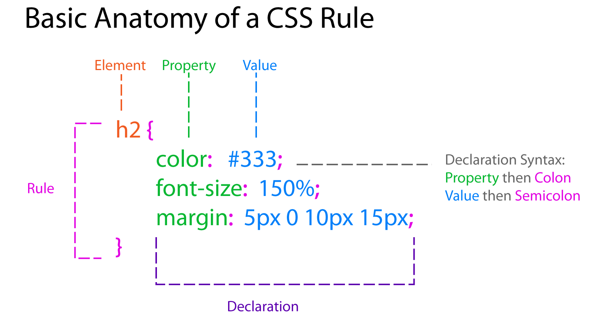
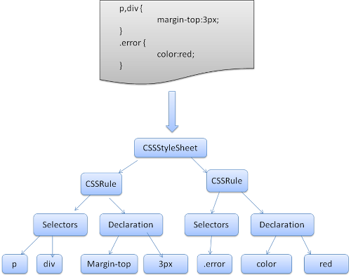
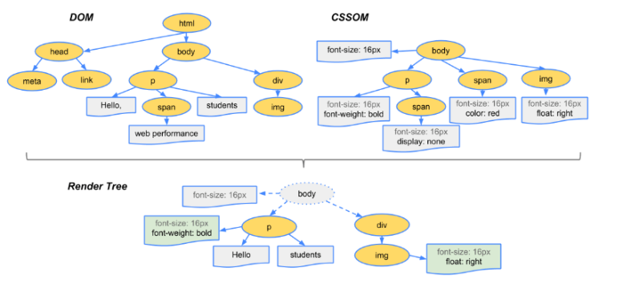

【CSS-task15】浏览器渲染原理
小课堂【武汉小课堂】
分享人：严泽浩
目录
1.背景介绍
2.知识剖析
3.常见问题
4.解决方案
5.编码实战
6.扩展思考
7.参考文献
8.更多讨论
1.背景介绍
从耗时的角度，浏览器请求、加载、渲染一个页面，时间花在下面五件事情上:
- DNS 查询
- TCP 连接
- HTTP 请求即响应
- 服务器响应
- 客户端渲染
客户端渲染---浏览器渲染原理
浏览器渲染（渲染树构建、布局及绘制），又可以分为下面五个步骤：
- 处理 HTML 标记并构建 DOM 树。
- 处理 CSS 标记并构建 CSSOM 树。
- 将 DOM 与 CSSOM 合并成一个渲染树。
- 根据渲染树来布局，以计算每个节点的几何信息。
- 将各个节点绘制到屏幕上。
2.知识剖析
一:处理 HTML标记并构建DOM树。
当浏览器接收到服务器响应来的HTML文档后，会遍历文档节点，生成DOM树。 需要注意的是，DOM树的生成过程中可能会被CSS和JS的加载执行阻塞。
浏览器处理过程
- 转换：浏览器从磁盘或网络读取 HTML 的原始字节，然后根据指定的文件编码格式（例如 UTF-8 ）将其转换为相应字符
- 符号化：浏览器将字符串转换为 W3C HTML5 标准 指定的各种符号
- 词法分析：发射的符号转换为 对象 ，定义它们的属性与规则
- DOM 构建：因为 HTML 标记定义不同标签间的相互关系（某些标签嵌套在其他标签中），所以创建的对象在树状数据结构中互相链接，树状数据结构还捕获原始标记中定义的父子关系：比如 HTML 对象是 body 对象的父对象， body 是 paragraph 对象的父对象等等
DOM结构

二:处理 CSS 标记并构建 CSSOM 树。
与DOM 类似，我们需要对 CSS 构建树。首先CSS 字节转换成字符，接着转换成令牌和节点，最后链接到一个称为“CSS 对象模型”(CSSOM) 的树结构内
CSSOM创建过程
- 解析器先创建一个CSSStyleSheet对象，然后在对样式进行解析时，创建CSSStyleRule，并添加到已解析的样式对象列表中。
- 解析完后，样式表中的所有样式规则都转化成了Webkit的内部模型对象CSSStyleRule对象。
- 所有的CSSStyleRule对象都存储在CSSStyleSheet对象中。
- 然后将CSSStyleSheet对象转换为CSSRuleSet对象。后面就基于这些CSSRuleSet对象来决定每个页面中的元素样式。
一个层级样式表（CSS）是由一系列的规则组成的，每一条规则是由一个选择器和若干条声明组成的。每条声明是一个键值对，由属性和值组成。
CSSOM树示意图
三:将 DOM 与 CSSOM 合并成一个渲染树。
DOM 树与 CSSOM 树融合成渲染树，其中渲染树只包括渲染页面需要的节点
渲染树的构建
- 通过DOM树和CSS规则树我们便可以构建渲染树。浏览器会先从DOM树的根节点开始遍历每个可见节点。对每个可见节点，找到其适配的CSS样式规则并应用。
- 渲染树构建完成后，每个节点都是可见节点并且都含有其内容和对应规则的样式。这也是渲染树与DOM树的最大区别所在。渲染树是用于显示，那些不可见的元素当然就不会在这棵树中出现了
DOM 树与 CSSOM 树融合成渲染树
若DOM节点似枝桠,CSS规则就是红花绿叶
四:根据渲染树来布局，以计算每个节点的几何信息。
- 布局阶段会从渲染树的根节点开始遍历
- 确定每个节点对象在页面上的确切位置(由css布局方式决定)
- 然后确定每个节点对象内部的尺寸(由盒子模型决定)
- 精确地捕获每个元素在屏幕内的确切位置与大小
五:将各个节点绘制到屏幕上。
根据渲染树布局，计算CSS样式，即每个节点在页面中的大小和位置等几何信息。 HTML默认是流式布局的，CSS和js会打破这种布局，改变DOM的外观样式以及大小和位置 。这时就要提到两个重要概念：replaint(重绘)和reflow(回流)。
- replaint(重绘) : 屏幕的一部分重画，不影响整体布局， 比如某个CSS的背景色变了，但元素的几何尺寸和位置不变。 所以重绘不会影响到其他元素
- reflow(回流) ： 意味着元件的几何尺寸变了，我们需要重新验证并计算渲染树。 这会影响到其他元素的尺寸和位置,是渲染树的一部分或全部发生了变化。
性能优化
- reflow的性能消耗要比repaint的大,所以我们要尽量避免reflow
- 避免设置多项内联样式，使用常用的class方式进行设置样式，以避免设置样式时访问dom的低效率。
- 牺牲平滑度满足性能：动画精度太强，会造成更多的repaint/reflow，牺牲精度，能满足性能的损耗，获取性能和平滑度的平衡。
- 避免使用table进行布局， table每个元素的大小以及内容的改变，都会导致整个table进行重新计算，造成大幅度的repaint或者reflow。 改用div则可以针对性的repaint和避免不必要的reflow。
3.常见问题
问题1:如何针对css进行性能优化？
4.解决方案
加载性能优化
- 尽量将样式写在单独的css文件里面，在head元素中引用
- css属性按照顺序声明:先显示定位布局类属性，后盒模型等自身属性，最后是文本类及修饰类属性。
- 避免使用复杂的选择器，层级越少越好
- 不使用@import,因为这会影响css文件的加载速度
选择器性能优化
CSS选择器对性能的影响源于浏览器匹配选择器和文档元素时所消耗的时间， 所以优化选择器的原则是应尽量避免使用消耗更多匹配时间的选择器。 而在这之前我们需要了解CSS选择器匹配的机制
CSS选择器匹配的机制
CSS选择器是从右到左进行规则匹配(这样做更高效) 只要当前选择符的左边还有其他选择符，样式系统就会继续向左移动，直到找到和规则匹配的选择符， 或者因为不匹配而退出。我们把最右边选择符称之为关键选择器。
CSS 选择器的执行效率从高到低
- id选择器（#myid）
- 类选择器（.myclassname）
- 标签选择器（div,h1,p）
- 相邻选择器（h1+p）
- 子选择器（ul < li）
- 后代选择器（li a）
- 通配符选择器（*）
- 属性选择器（a[rel="external"]）
- 伪类选择器（a:hover, li:nth-child）
5.编码实战
6.扩展思考
问题一:css渲染阻塞的原因及解决办法
原因分析
css的加载并不会导致html解析和渲染的停止，但是会影响到js脚本的执行。 因为js脚本不仅可以读取修改到dom，也可以读取修改到cssom。 故在js脚本执行前，browser必须保证到css文件完全加载并解析完成，即cssom树完全构建好。 这就导致了js执行的延迟，也因此导致html解析和渲染延迟。
解决方法
1、在引入顺序上，css资源的引入要优于js脚本的引入
2、对css进行精简并尽快提供
3、可以用媒体类型（会加载不会阻塞）
4、用媒体查询（会记载，只有在符合的设备上才会进行阻塞）
7.参考文献
参考二：[译]浏览器是如何工作的
参考三：十分钟读懂浏览器渲染流程
参考四：DOM渲染机制与常见性能优化
8.更多讨论
讨论点一:为了提高性能,我们在编写HTML和css文件时还有哪些方法?
鸣谢
感谢大家观看
BY : 严泽浩